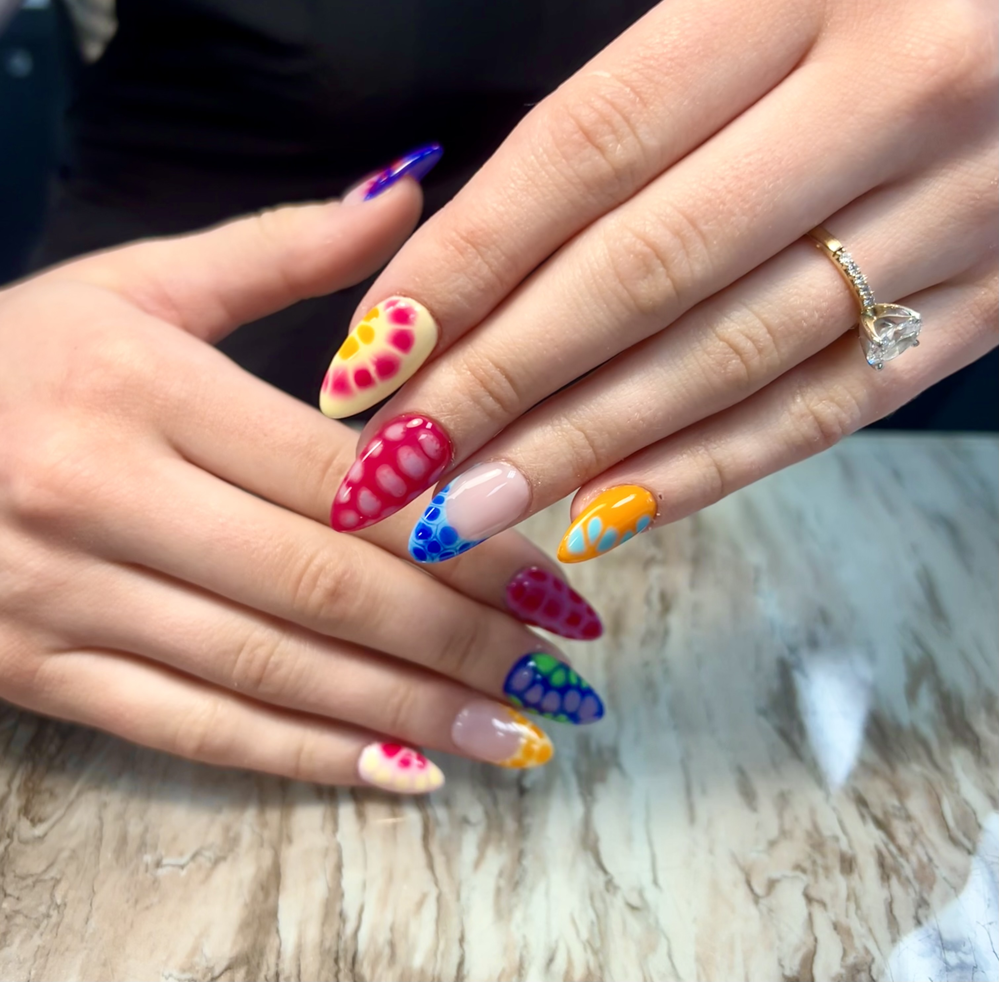
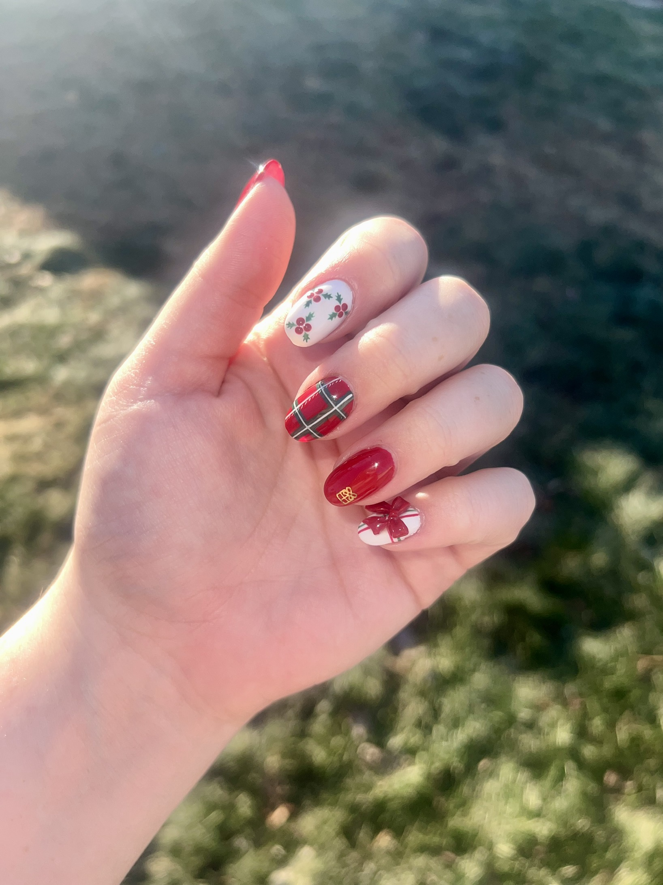
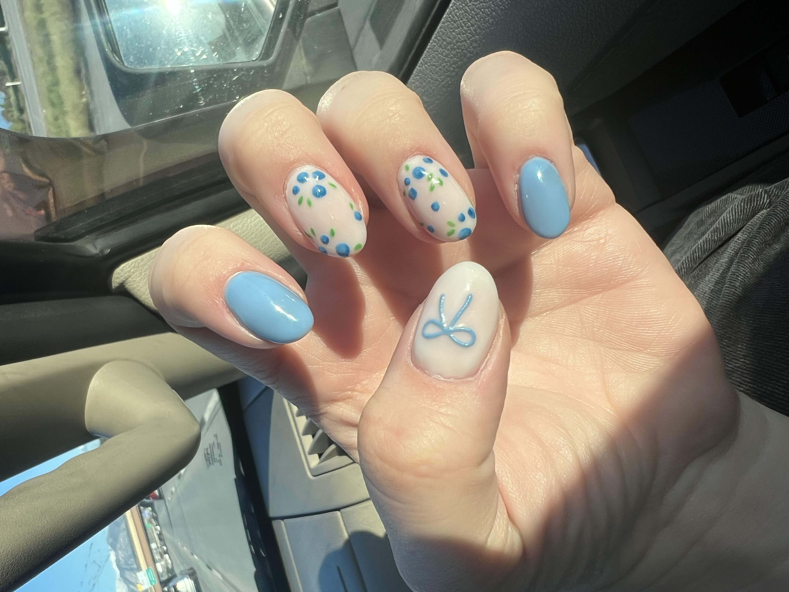

creative expression
Nail Art & Designs
As a nail technician, my hands aren't just coordinated — they're my canvas. Every set tells a different story, from delicate florals to bold seasonal designs. Here are some of my favorites.






My Nail Art Process
- Prep & Shape
- File and buff the nail surface
- Push back cuticles
- Apply Dehydrator and Primer
- Apply base coat
- Application
- Apply color in thin, even layers
- Add hand-painted details with a fine brush
- Add other embellishments; stickers, foils, gems, etc.
- Finish
- Clean up edges
- Seal with top coat
- Apply and massage cuticle oil on hands